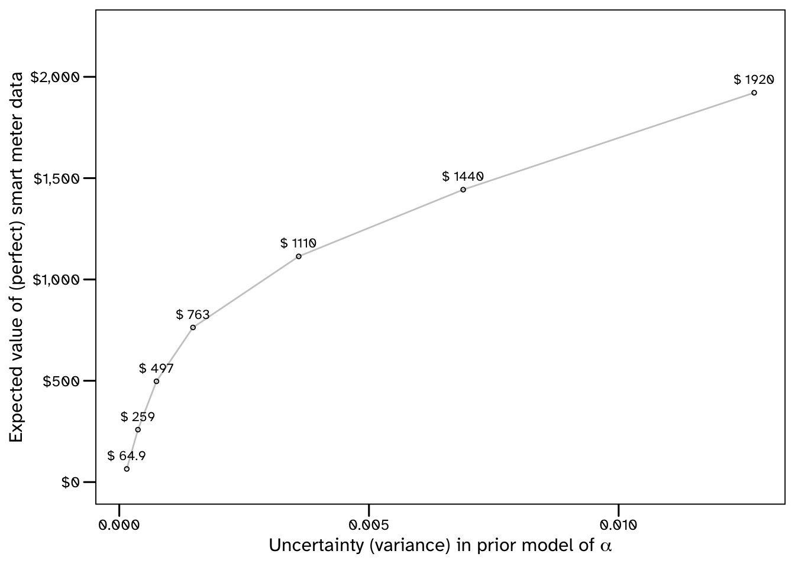

Code
import cmdstanpy, requests, os, tempfile, multiprocessing, math
import numpy as np, pandas as pd
from scipy import statsGuidance on the Use of Probabilistic Methods for Identifying Data Requirements
The various new methods of collecting and analysing data that are increasingly available to engineers can contribute to improvements in safety and efficiency of the built environment. However, understanding the quantity and quality required will continue to be a challenge to engineers. For instance:
The principles of data-centric engineering are not new. Engineers have always had to rely on empirical models that are supported by tests to demonstrate that systems are reliable and safe. However, given the current availability of free, open-source software tools for data analysis and statistical inference, there is an opportunity to improve engineering workflows. The guidance presented here is intended to be pragmatic and introductory. Example problems are presented alongside accompanying code implementations. There is a focus on answering meaningful questions, supporting decision making, and ensuring reproducible and reliable results.
Uncertainty accompanies our lives. Coherent modelling of uncertainties for decision-making is essential in engineering and related disciplines.
This is a computational document that includes chunks of Python and R code necessary to analyse the data, and solve the decision problems in the various examples. To achieve this, various libraries/packages have been used, and these will need to be installed and loaded for the code to run.
import cmdstanpy, requests, os, tempfile, multiprocessing, math
import numpy as np, pandas as pd
from scipy import statslibrary(tidyverse); library(fitdistrplus); library(boot)
library(cmdstanr); library(copula); library(RHugin)
library(lhs)using CSV, DataFrames, DataFramesMeta, Printf
using Random, Distributions, Bootstrap, Copulas, LatinHypercubeSampling
using JuMP, HiGHS, DecisionProgramming, Turing, LinearAlgebraIn R and Python packages first need to be installed. Guidance on installing packages can be found here (for R) and here (for Python).
Packages only need to be installed once (unless they are uninstalled), but then need to be loaded each time you want to make direct use of the functions or data they contain. This document will not detail the workings of each package, but such information can be found online, for example here is the website for the Python ‘pandas’ package.
In addition, some statistical models that have been written in the probabilistic programming language Stan have been used. The data used in the examples, as well as the code used for each exercise can be freely downloaded from this public Github repository.
Such calculations could also be performed using spreadsheet software. The primary reasons for not providing accompanying spreadsheet files to run the example calculations, are as follows:
Some notable examples of high consequence spreadsheet errors are recorded by the European Spreadsheet Risks Interest Group (EuSpRiG) and further discussion on the incompatibility of spreadsheets and good data management (in the context of research) be found in a presentation from Monash University, here.
Engineering standards acknowledge the presence of variability in the quantities they are dealing with, but do not always provide guidance on how to apply models of variability, particularly in supporting decision making. For example, repeated strength tests of specimens from the same material, using the same machine, in the same lab will produce differing, though hopefully similar) results. Any decision on whether a material is safe to use must therefore account for this variability somehow.
Historically, structural engineers have used deterministic approaches to perform conservative assessments. In this example a safe or characteristic value of strength may be taken, such as the minimum from a set of measurements. The premise of this approach is that, if the lowest measurement meets a requirement, then it is expected to be OK. These kind of heuristics do not tell us how many tests are needed to be confident that the lowest measurement is representative, since each new measurement provides an opportunity to find a new lowest strength. As a result, unquantified and implicit margins of conservatism are introduced, making it very difficult to find the best estimates of risk that are required to justify spending consistently and coherently.
This can be resolved by using probability to formally quantify uncertainty, and various examples of this are presented in this document. Statistical models of variability can describe how many uncertain quantities can be dependent, how uncertainty can increase when making predictions over various time frames, and how uncertainty can decrease when new data becomes available. Uncertainty quantification therefore allows for many other types of analysis, such as identifying where, when and how additional data should be collected, which is the focus of this document.
While data will generally always provide some value, provided that it is relevant, it will not always represent a good investment. There are various costs associated with collecting engineering data, including hiring/purchasing specialised measurement equipment, the storage costs of high-volume streaming data, and occasionally the risk associated with exposing personnel to hazardous environments to collect data. Justifying these costs require engineers to link data collection to the improved decision making that it facilitates.
Without formal methods of uncertainty quantification, engineers may differ in opinion about data collection strategy. Quantitative approaches will be preferable because they are auditable. As demonstrated in the examples in this document, these approaches do not remove engineering input from this process, but rather include expert knowledge in a formal way. Unless both available data, and subject matter expertise are used to inform decisions, then some information is not being taken advantage of.
As described in the below note, there are many appealing reasons to use probability to describe variability.
It has been proposed that since probability is the mathematical language of randomness, it should be used to model the uncertainties that arise (Gelman et al. 2014). Another compelling argument is that the practical meaning of probability is intuitive. Probabilities can be assigned to possible (uncertain) outcomes in decision problems.
Understanding how to estimate these probabilities as well as how to use them allows for coherent and replicable (auditable) decision making. The statistics presented in this document are with the intention of providing this kind of pragmatic guidance.
There are many established probability distributions, and some reasonable question regarding their application in engineering calculations, include:
One common method of visualising of the Normal distribution is using a Galton board. A number of beads hit a series of pegs as they fall to the base of the board. When they arrive at the base, they can be seen to approximate a Normal distribution. This can also be replicated using computer simulations, but in any case, it suggests that distribution functions are not arbitrary.
A similar example is presented in (McElreath 2020), where the author counts the number of possible arrangements of items that are hidden under buckets. Because there are more ways to hide these items evenly under the buckets, this is considered the most likely outcome (without any additional information). Running simulations (or other experiments) using this example will produce a Uniform distribution.
Both the Galton board and hidden items example show how a distribution can represent the most likely outcome of some event(s). They are said to be Maximum Entropy (MaxEnt) solutions for those problems. Using this principle is often recommended for deciding on a statistical model with very limited information about the problem (Jaynes 2003). Some mathematical proofs of various MaxEnt models are presented in (Jordaan 2005).
More generally though, engineers may need to impose some additional features and constrains in their models (to represent their knowledge of the system being analysed). Probability distributions can then be considered as helpful tools to represent uncertainty. Prior predictive checks (see Section X) can be used to ensure that the selected distribution are resulting in appropriate results on an intuitive outcome scale.
Modern programming languages have many functions for evaluating, integrating, sampling, and estimating parameters from probability distributions. The below examples show how \(10\) independent samples can be drawn from a normal distribution, with a mean value of \(0\) and a standard deviation of \(1\).
stats.norm.rvs(size = 10, loc = 0, scale = 1)array([-0.11518717, 1.97297444, -1.30186036, -1.54886395, -0.17229209,
0.82312992, 2.30747659, 0.70248315, 1.24588703, 1.94234939])rnorm(n = 10, mean = 0, sd = 1) [1] -1.4218680 -0.2181181 1.2948423 0.5569817 0.9804617 1.3291986
[7] 0.6589187 -0.4072218 0.3048598 -1.1756857Normal(0, 1) |> x -> rand(x, 10)10-element Vector{Float64}:
1.662824686556083
1.2698826058521748
1.2924038643940456
-1.2818295134620277
-0.36088715370244234
-2.2469815839370058
0.03998824855541124
-0.0002601692732308935
1.6175419171614132
-0.48607948737476747Many more samples are typically required for them to be considered a sufficient characterisation of the distribution. Various variance reduction methods have been developed, so that sampling problems can be solved using fewer samples, therefore requiring less computational effort. These include importance sampling, and latin hypercube sampling, and examples of the latter are presented below.
probs = stats.qmc.LatinHypercube(1).random(10)
stats.norm.ppf(probs, loc = 0, scale = 1)array([[ 0.26458621],
[ 0.19090013],
[-0.26480939],
[-0.66181775],
[-1.29870457],
[ 1.11706368],
[-1.23342957],
[ 0.69306076],
[ 2.02656996],
[-0.22887493]])randomLHS(n = 10, k = 1) |>
qnorm(mean = 0, sd = 1) [,1]
[1,] -2.2365458
[2,] 0.1868827
[3,] 0.4575788
[4,] -0.2031305
[5,] 1.8163804
[6,] -1.0049617
[7,] 0.8348605
[8,] -0.4456094
[9,] -0.5635345
[10,] 0.8581933randomLHC(10 + 2, 1) |>
x -> scaleLHC(x, [(0, 1)]) |>
x -> quantile(Normal(0, 1), x) |>
x -> filter(!in((-Inf, Inf)), x)10-element Vector{Float64}:
-1.3351777361189363
-0.11418529432142835
-0.9084578685373852
0.6045853465832374
-0.3487556955170447
1.3351777361189363
0.3487556955170447
-0.6045853465832374
0.11418529432142821
0.9084578685373853The effect of latin hypercube sampling, when compared to standard (inverse-transform, Monte Carlo sampling) methods is shown in Figure 1.

Sampling from distributions converts mathematically challenging statistical problems to simpler data analysis problems. Consider the basic problem of structural reliability, where an engineer is tasked with identifying the probability of an uncertain load, \(L\), exceeding a components uncertain resistance, \(R\), to that load. This would represent the probability of the component failing, due to this load - a very important quantity for supporting inspection and maintenance decisions!
\[ \Pr(fail) = \Pr(L \geq R) \]
The probability of failure defined by the convolution integral, which only has analytical solutions for some simple examples:
\[ \Pr(L \geq R) = \int_{L \geq R} \int f(r, s) \; dr \; ds \]
Alternatively, the solution can be approximated by counting the number of samples from the load model that exceed samples from the resistance model. Each set of samples can be considered as a possible outcome (realisation) from the models, so the proportion of samples where the load exceeds the resistance therefore represents the probability of failure.
Using Python, R or Julia, it is now possible run millions of such simulations relatively quickly (though this will depend on the complexity of the load and resistance models), and this allows engineers to find solutions that could be difficult to obtain mathematically.
As a simple example, consider the series (or ‘weakest link’) arrangement of components in Figure 2.
graph LR
START[ ] --- A[Component 1]
A --- B[Component 2]
B --- C[Component 3]
C --- STOP[ ]
style START fill:#FFFFFF, stroke:#FFFFFF;
style STOP fill:#FFFFFF, stroke:#FFFFFF;
Such systems will fail when any of the components fail. If the below distributions describe the uncertainty in the applied loads and resistances, then it is possible the estimate the probability of failure by sampling from these distributions and evaluating the proportion of simulations associated with failure.
\[ R_{1} \sim Normal(\mu = 17, \sigma = 2) \]
\[ R_{2} \sim Normal(\mu = 16, \sigma = 3/2) \]
\[ R_{3} \sim LogNormal(log\mu = 2.7, log\sigma = 0.07) \]
# TBCset.seed(seed = 240819); n_samples <- 10^6
# TBCL = Normal(10, 2)
R₁ = Normal(17, 2); R₂ = Normal(16, 3/2); R₃ = LogNormal(2.70, 0.07)
prng = MersenneTwister(240819); n_samples = 10^6
β_df = DataFrame(R₁ = rand(prng, R₁, n_samples),
R₂ = rand(prng, R₂, n_samples),
R₃ = rand(prng, R₃, n_samples),
L = rand(prng, L, n_samples))
β_df.fail = (β_df.L .>= β_df.R₁) .| (β_df.L .>= β_df.R₂) .| (β_df.L .>= β_df.R₃)
pof = sum(β_df.fail) / n_samples0.023803In the above, the resistance parameters of the components are independent. This means that knowing that the resistance of Component A is relatively high, does not provide any information about the likely resistance of the other components. However, if the factors influencing the resistance were common, then a relatively high value for one component would suggest that a relatively high value for the other components were more likely. In such cases, this dependency should be accounted for in the probabilistic model.
One method for achieving this is to use copula functions (Hofert et al. 2022). There are various types of copula, but in each case they describe the dependency between the different constituent (marginal) components of a multi-variate probabilistic model.
Copulas can be used to model complex dependency, for example weakly dependent at relatively low values and highly dependent at relatively high values (or vice versa). In this case a Gaussian copula is used, which can only model linear dependency using correlation coefficients \(\rho\).
\[ \rho_{R_{1}, R_{2}} = 0.8 \]
\[ \rho_{R_{1}, R_{3}} = 0.6 \]
\[ \rho_{R_{1}, R_{2}} = 0.4 \]
# TBCset.seed(seed = 240819); n_samples <- 10^6
# TBCfunction convert_logsd(log_μ, log_σ)
σ = exp(log_μ + 1/2 * log_σ^2) * sqrt(exp(log_σ^2) - 1)
return(σ)
end
function convert_logmean(log_μ, log_σ)
μ = exp(log_μ + 1/2 * log_σ^2)
return(μ)
end
ρ₁₂ = 0.8; ρ₁₃ = 0.6; ρ₂₃ = 0.4
R₃_μ = convert_logmean(2.70, 0.07); R₃_σ = convert_logsd(2.70, 0.07)
Σ = [R₁.σ^2 ρ₁₂*R₁.σ*R₂.σ ρ₁₃*R₁.σ*R₃_σ
ρ₁₂*R₁.σ*R₂.σ R₂.σ^2 ρ₂₃*R₂.σ*R₃_σ
ρ₁₃*R₁.σ*R₃_σ ρ₂₃*R₂.σ*R₃_σ R₃_σ^2]
copula = GaussianCopula(Σ)
MVR = SklarDist(copula, (R₁, R₂, R₃))
prng = MersenneTwister(240819); n_samples = 10^6
mv_df = rand(prng, MVR, n_samples) |>
x -> transpose(x) |>
x -> DataFrame(x, ["R₁", "R₂", "R₃"])
pof = sum((β_df.L .>= mv_df.R₁) .| (β_df.L .>= mv_df.R₂) .| (β_df.L .>= mv_df.R₃)) / n_samples 0.019831Note that the probability of failure reduces when accounting for this dependency. Since failure is defined by the resistance of the components being lower than an applied load, ensuring that low resistances occur together result in fewer simulations that predict failure. Conversely, if multiple components were connected in parallel (where system failure requires all of the components to fail) increasing the dependency in the resistance properties increases the probability of failure as weak components occurring together is relatively more common with this Gaussian copula model.
A comprehensive introduction to structural reliability methods is presented in (Melchers and Beck 2018). This book also includes some perceived challenges which are discussed later in this document.
So far this document has introduced the use of probabilistic models to describe uncertainty inherent to simple systems (sometimes called aleatory uncertainty). The second key source of uncertainty in engineering calculations is the statistical uncertainty associated with small, imperfect datasets (sometimes called epistemic uncertainty).
This example considers how to interpret a set of measurements of material strength, accounting for statistical uncertainty. The data is presented in Table 1. This data can be downloaded using the below code, which also shows the first few rows.
strength_df = pd.read_csv(filepath_or_buffer = "data_files/strength_data.csv")
strength_df.head(n = 3) id yield tensile
0 1 415.394479 590.806283
1 2 435.102535 680.617608
2 3 374.046293 683.524267strength_df <- read_csv(file = "data_files/strength_data.csv")
strength_df |> head(n = 3)# A tibble: 3 × 3
id yield tensile
<dbl> <dbl> <dbl>
1 1 415. 591.
2 2 435. 681.
3 3 374. 684.strength_df = CSV.read("data_files/strength_data.csv", DataFrame)
first(strength_df, 3)3×3 DataFrame
Row │ id yield tensile
│ Int64 Float64 Float64
─────┼─────────────────────────
1 │ 1 415.394 590.806
2 │ 2 435.103 680.618
3 │ 3 374.046 683.524The results indicate some variability even though each row presents the result of the same test, using the same machine, on a tensile specimen from the same material. This variability can be attributed to:
Material heterogeneity. Manufacturing processes used to make structural steel results in local hard spots, laminations, inclusions and other anomalies that can locally influence the strength of the material. The presence of such anomalies in the microstructure of a testing specimen will influence the measured properties.
Imperfect measurement data. There is no manufacturing process that creates perfectly homogeneous steel, and there is no measurement of an engineering quantity that will tell us everything we want to know. In this example, the machine used to perform the tests will output results with some precision, which has been quantified by the manufacturers.
Shown here as a table:
| Test ID | Yield Strength, MPa | Tensile Strength, MPa |
|---|---|---|
| 1 | 415.3945 | 590.8063 |
| 2 | 435.1025 | 680.6176 |
| 3 | 374.0463 | 683.5243 |
| 4 | 401.6319 | 608.4174 |
| 5 | 365.7331 | 504.0710 |
| 6 | 376.6799 | 519.8186 |
| 7 | 365.3381 | 624.4340 |
| 8 | 396.7396 | 685.7945 |
| 9 | 376.4909 | 514.6392 |
| 10 | 421.1487 | 771.7754 |
| 11 | 425.8122 | 568.4605 |
| 12 | 352.4668 | 547.8975 |
| 13 | 393.4283 | 559.1092 |
| 14 | 431.9654 | 647.9011 |
| 15 | 363.0708 | 589.4842 |
| 16 | 393.3109 | 726.6864 |
| 17 | 379.4241 | 521.7981 |
| 18 | 413.7369 | 600.7571 |
| 19 | 388.8842 | 546.4207 |
| 20 | 342.2702 | 527.6821 |
There is a range of 92.8 MPa. There are many ways that this can be interpreted. Since no value was recorded less than 342 MPa, can it be assumed that lower yield strengths are not credible?
Engineers need to…
nice to have a cut-off (threshold). then worst-case assessments are possible.
assessing cracks in welded structures (BSI2015?)
MOTE
This variability can be approximated using probability distributions. These should be considered to be a model
stats.norm.fit(data = strength_df['yield'].values, method = 'MLE')(390.63377067499994, 26.256897184774186)fitdist(data = strength_df$yield, distr = 'norm', method = 'mle')Fitting of the distribution ' norm ' by maximum likelihood
Parameters:
estimate Std. Error
mean 390.6338 5.871221
sd 26.2569 4.151580fit_mle(LogNormal, strength_df.yield)LogNormal{Float64}(μ=5.965508668241968, σ=0.06904019319255647)These distribution parameters represent those with the highest score (likelihood) of the range considered. If the standard deviation was any higher, the likelihood of any values near the mean would be reduced, and if it was any lower the likelihood of any data at the tails would be reduced. Similarly, if the mean was any higher, the likelihood of any lower values would be reduced. So there is a trade-off here, and maximum likelihood estimates will provide the values that maximise the product of the likelihoods (or the sum of the log-likelihoods) for the data that is being used to fit the distribution.
However, there may often not be a clear maximum likelihood, particularly when estimating distribution parameters from a small dataset. In these cases the statistical uncertainty results in many possible values being credible (or having a similar likelihood). These should not be dismissed, and certainly not before there is enough evidence for a model to be confident of it’s maximum likelihood estimates.
The reason engineers pay for material tests, inspection activities and sensing systems is because the data that they provide can be used to estimate some uncertain quantity of interest. In general, the more data that is available, the less uncertainty will be associated with the prediction. For instance, a linear model with a straight line that approximately goes through two or three points is much less compelling than a straight line that approximately goes through hundreds of points (when the errors are the same).
The uncertainty that is associated with limited amounts of data is often referred to as statistical or epistemic uncertainty. It is distinct from aleatory uncertainty, which is the variability that is inherent in the problem, no matter how many measurements are available.
Since statistical uncertainty can be reduced by collecting more data, there are ways to intelligently identify when it is expected to be worthwhile paying more data, and where the point of diminishing returns is. The example calculations in this document, though presented in various levels of detail, are all based on the premise that collecting data reduces statistical uncertainty, and it is possible to check when this is (and is not) expected to be useful.
Statistical uncertainty in estimates of yield strength will be relatively high when only very few measurements are available. Maximum likelihood estimates will therefore not produce reliable predictions, since they could change significantly after including just a few more tests. It is especially important to understand this variability in cases like this to help distinguish a highly uncertain model with a highly informed model. Failing to do so can mean ac and this distinction is important when they are being used for decision support.
One method of quantifying variability in a maximum likelihood estimate is to find confidence intervals. Confidence intervals can be obtained by repeating the calculation many times using different samples of the data, and identifying the range within which some proportion of results are contained in. The below code finds the 95% confidence intervals for the maximum likelihood estimate of the mean yield strength, based on the tensile test data in Table 1.
Some further detail on confidence intervals can be found in (Gelman, Hill, and Vehtari 2020), but essentially, the below result should be interpreted as: in repeated experiments, the mean yield strength will lie somewhere within this range 95% of the time. How that fact can be used to support decision making is not clear, so this document considers a more intuitive method of describing this uncertainty.
yield_data = (strength_df['yield'].values,)
def get_MLE_mean(data):
return stats.norm.fit(data = data, method = 'MLE')[0]
bootstrap_mean = stats.bootstrap(data = yield_data, statistic = get_MLE_mean, vectorized = False,
confidence_level = 0.95, n_resamples = 1000, method = "basic")
bootstrap_mean.confidence_intervalConfidenceInterval(low=379.273410024, high=403.06993457699986)get_MLE_mean <- function(x, id) {fitdist(x[id], distr = 'norm')$estimate[1]}
bootstrap_mean <- strength_df$yield |>
boot(statistic = get_MLE_mean, R = 1000) |>
boot.ci(conf = 0.95)
bootstrap_mean$basic |> as_tibble() |>
dplyr::select(c(conf, V4, V5)) |>
rename(lower_bound = V4, upper_bound = V5)# A tibble: 1 × 3
conf lower_bound upper_bound
<dbl> <dbl> <dbl>
1 0.95 379. 402.function get_MLE_mean(data)
Distributions.fit_mle(LogNormal, data).μ
endget_MLE_mean (generic function with 1 method)
bootstrap(get_MLE_mean, strength_df.yield, BasicSampling(1_000)) |>
x -> confint(x, BasicConfInt(0.95))((5.965508668241968, 5.935712784801469, 5.994791604097523),)Probabilistic programming is used to describe a statistical model, and then automate the inference (estimation of the unknown and uncertain parameters) (Rainforth 2017). Sometimes known as probabilistic machine learning (Ghahramani 2015), inferring unknown parameters, while also accounting for the uncertainty, including statistical uncertainty, is a desirable characteristic of a calculation. One reason for this is because it can be used to demonstrate how additional data can reduce uncertainty, and this can be used as the basis for intelligently collecting data.
There are now many probabilistic programming languages available to engineers, but the one that is used in the examples in this document is Stan. The primary justification for this is that it runs a state of the art sampling algorithm, and (unlike many alternatives) it can be used with many other languages. In these examples, pre- and post-processing of data will be done in R and Python.
Firstly, loading the Stan model for quantifying uncertainty in material strength:
strength_model = cmdstanpy.CmdStanModel(stan_file = "stan_models/yield_strength_model.stan")INFO:cmdstanpy:found newer exe file, not recompilingstrength_model <- cmdstan_model(stan_file = "stan_models/yield_strength_model.stan", stanc_options = list("O1"))The data block in the Stan file indicates the data that it is expecting. In Python this data is provided to the Stan model in the form of a dictionary, and in R it is a list.
strength_data = {"n_strength" : strength_df.shape[0],
"strength_meas" : strength_df["yield"].values,
"error" : 3, "m_s" : 5, "sd_s" : 0.25, "rate_s" : 0.1}
n_par = multiprocessing.cpu_count()
n_chains = 4; n_draws = 1000; n_warmup = 2000
strength_fit = strength_model.sample(data = strength_data, seed = 1234,
chains = n_chains, parallel_chains = n_par,
iter_warmup = n_warmup, iter_sampling = n_draws)strength_data = list(n_strength = nrow(strength_df),
strength_meas = strength_df$yield,
error = 3,
m_s = 5, sd_s = 0.1, rate_s = 0.1)
n_par <- parallel::detectCores()
n_chains <- 4; n_draws <- 1000; n_warmup <- 2000
strength_fit <- strength_model$sample(data = strength_data, seed = 1234,
chains = n_chains, parallel_chains = n_par,
iter_warmup = n_warmup, iter_sampling = n_draws)Processing results…
class Stan_Posterior:
def __init__(self, fit):
self.fit = fit
self.draws_per_chain = self.fit.draws().shape[0]
self.n_chains = self.fit.draws().shape[1]
self.n_pars = self.fit.draws().shape[2]
self.draws_tot = self.draws_per_chain * self.n_chains
def draws_df(self):
posterior_df = pd.DataFrame(columns = self.fit.column_names + ("Chain", "Iteration"))
for c in range(self.n_chains):
posterior_df = pd.concat([posterior_df,
(pd.DataFrame(self.fit.draws()[:,c,:], columns = self.fit.column_names).
assign(Chain = "Chain {}".format(1 + c),
Iteration = 1 + np.arange(self.draws_per_chain)))])
return(posterior_df)
def tidy_draws_df(self):
posterior_df_tidy = self.draws_df().melt(id_vars = ("Chain", "Iteration"))
return(posterior_df_tidy)which allows for…
strength_posterior = Stan_Posterior(fit = strength_fit)
strength_posterior_df = strength_posterior.tidy_draws_df()
strength_posterior_df.tail(n = 3) Chain Iteration variable value
43997 Chain 4 998 strength_post_pred 231791.0
43998 Chain 4 999 strength_post_pred 103.364
43999 Chain 4 1000 strength_post_pred 0.007266strength_data_df <- DomDF::tidy_mcmc_draws(cmdstan_fit = strength_fit)
tail(strength_data_df)# A tibble: 6 × 4
Parameter Chain Iteration value
<chr> <int> <int> <dbl>
1 strength_post_pred 4 995 13.6
2 strength_post_pred 4 996 7.97
3 strength_post_pred 4 997 57.7
4 strength_post_pred 4 998 8.01
5 strength_post_pred 4 999 2934.
6 strength_post_pred 4 1000 59629. It is widely acknowledged that not all data are equally informative. Engineering data often consists of some indirect measurements of a complex physical phenomena, sometimes in challenging environments. As a result, it will always be associated with some precision, bias and reliability.
It may be necessary to conduct some calibration experiments to quantify these properties, and one such example is provided later in this document. Higher quality (more precise, less biased, more reliable) data will always be at least as useful as lower quality data, and will sometimes be worth paying much more for.
Risk based inspection standards (such as API 580) often acknowledge this difference in quality. A visual inspection is not considered as good as an ultrasonic inspection for damage, and is therefore recommended to be completed more frequently to manage risk. The calculations in this document account for data quality more accurately. Rather than relying on simple heuristics, statistical models are used to relate the information content to the raw data.
…There are many alternative PPLs available to engineers. One example is the Turing library, written for Julia users. The model can be specified using the @model macro, as shown below:
@model function yield_model(;yield_strength::Vector{Float64})
σ ~ Exponential(10)
μ ~ Normal(350, 50)
n_samples = length(yield_strength)
for n ∈ n_samples
yield_strength[n] ~ Normal(μ, σ)
end
endyield_model (generic function with 2 methods)Which can then be run to generate a data frame of samples from the joint posterior distribution:
n_draws = 1000; n_chains = 4; sampler = NUTS()NUTS{Turing.Essential.ForwardDiffAD{0}, (), AdvancedHMC.DiagEuclideanMetric}(-1, 0.65, 10, 1000.0, 0.0)posterior_df = yield_model(yield_strength = strength_df.yield) |>
x -> sample(x, sampler, MCMCThreads(), n_draws, n_chains) |>
x -> DataFrame(x) |>
x -> @select(x, :chain, :iteration, :σ, :μ)4000×4 DataFrame
Row │ chain iteration σ μ
│ Int64 Int64 Float64 Float64
──────┼─────────────────────────────────────
1 │ 1 501 13.985 337.324
2 │ 1 502 5.8649 336.259
3 │ 1 503 21.7979 362.633
4 │ 1 504 31.2744 365.967
5 │ 1 505 6.09543 338.532
6 │ 1 506 6.06938 348.771
7 │ 1 507 5.66027 338.066
8 │ 1 508 10.0895 336.773
⋮ │ ⋮ ⋮ ⋮ ⋮
3994 │ 4 1494 9.36087 338.349
3995 │ 4 1495 16.9134 342.029
3996 │ 4 1496 16.5591 339.981
3997 │ 4 1497 8.31474 333.497
3998 │ 4 1498 11.2569 334.493
3999 │ 4 1499 13.9398 344.733
4000 │ 4 1500 13.6279 349.953
3985 rows omittedThe joint distribution of parameters can then be used to sample from predictive distributions of other quantities. These samples can then be used in the same way that the Monte Carlo samples were used in Section X to approximate probabilities of failure.
Monte Carlo sampling of rare events, such as failure may require a large amount of simulations, only very few of which may predict failure. As proposed in this article, statistical uncertainty can be accounted for in this estimate to provide a distribution of credible probabilities of failure, rather than a single maximum likelihood point.
This can be achieved using probabilistic programming, but this may require some re-scaling. Many MCMC sampling algorithms may find it challenging to sample from the very narrow distribution of probabilities of failure. All the values will be very small, the sampling will be highly sensitive to the parameters that govern the sampling. However, sampling from the negative index of \(\beta_{R}\) will provide a more management scale, likely to be in the region of \(0\) - \(10\). This could be further reparameterised if required, but would then lose some immediate interpretability.
Engineering analysis, whether it is a fracture mechanics assessment, a stress analysis, or an environmental forecast is completed with the intention of supporting decision making. And yet, these calculations are often performed separately from the underlying decision problem, and by a different team.
This interpretation of a calculation by a decision-maker can introduce subjective judgement that is not formally reported. As a result, it may be difficult to repeatedly arrive at the same decision (conditional on the same information), or even explain how the decision was made in an audit. This message is made in the below extract, in the context of pipeline engineering:
…you don’t need anything at all! You don’t need qualified engineers, you don’t need quality systems, you don’t need risk management, you don’t need safety audits, you don’t need inspections, you don’t need training. You don’t need anything! Until something happens… then you need everything…. Got the message?
A key challenge in estimating the expected value of a prospective data collection activity, is that it is performed before the data is available to include in models - the purpose of the analysis is to help decide whether it is worth collecting.
Instead, the method considers all of the information that will be available at the time of making this decision. Engineers will be able to predict, with some (and perhaps a lot of!) uncertainty, what they expect the value to be. They will also know, generally from the contractor, is the quality of data that will be provided. For instance, inspection technologies are calibrated by service providers before they are brought to market, and so along with a quotation, a performance specification can be provided explaining how precise the data will be.
A value of information analysis uses all of this available information and, in the context of the decision problem that the data is intended to support, quantifies on a meaningful, monetary scale, the expected value of the data to the engineer.
flowchart LR
d1[Decision] -- D1 --> o1((Uncertain \noutcome, \nD1))
d1[Decision] -- D2 --> o2((Uncertain \noutcome, \nD2))
o1 --O = A --> c1a{Utility, \nO = A, d = D1}
o1 --O = B --> c1b{Utility, \nO = B, d = D1}
o2 --O = A--> c2a{Utility, \nO = A, d = D2}
o2 --O = B--> c2b{Utility, \nO = B, d = D2}
The expected utility associated with making decision \(d1\), \(\mathbb{E}\Big[ u(d1) \Big]\) can be calculated as follows:
\[ \mathbb{E}\Big[ u(d1) \Big] = \Pr(O = A) * u(O = A, d = D1) + \Pr(O = B) * u(O = B, d = D1) \]
Here, the utilities (or costs) are being weighted by the probabilities that they will occur. The expected utility associated with making decision \(D2\) can be calculated in the same way, and the expected optimal decision will be the option that has the highest expected utility, or lowest expected cost.
Approximating real engineering systems using decision-event trees will require many more nodes than those presented in Figure 3. This would lead to very large diagrams. Consequently, they are often represented more concisely, using influence diagrams.
Influence diagrams do not show every possible event path graphically (rather, these are stored as tables behind each node.) An influence diagram representation of Figure 3 is shown in Figure 4.
flowchart LR
d1[Decision] --> o1((Uncertain \noutcome))
d1 --> c1{Utility}
o1 --> c1
The arrows in an influence diagram are causal (like in a Bayesian network). The arrows in Figure 4 imply that the selected decision influences the uncertain outcome, and that the utility is conditional on both of these parameters. Drawing a useful influence diagram therefore requires some knowledge of the system that it is designed to represent.
Drawing a graphical model can simply follow on, from a description of an engineering system.
If tasked with describing a corrosion protection system as an influence diagram, to help identify whether a data collection activity is expected to be worthwhile, it would be recommended to consult a corrosion specialist.
If a pipeline integrity engineer provided the following, basic information about the protection system for external corrosion of a buried pipeline:
This information can be shown graphically, using the influence diagram shown in Figure 5. This representation allows for information on any of the uncertain parameter can be propagated through the network. It also describes how decision/actions can affect specific parameters in a model (and therefore also in the outcomes of interest, i.e. external corrosion rate).
Using a model to predict how a system will respond to various interventions, as facilitated by influence diagrams, is often described as the goal of digital twins.
flowchart LR
dcoat[Complete \nDCVG Survey?] --> coat((Coating \nCondition))
cp((CP \nPerformance)) --> corr((Corrosion \nRate))
coat --> corr
dcoat --> ccoat{DCVG \n Costs}
cp --> ccp{CP costs}
cp --> coat
soil((Soil Type)) --> corr
corr --> ccorr{Corrosion \ncosts}
In designing an energy system for a region, using some combination of nearshore and offshore wind, and solar. The combination (portfolio) should be selected such that the some system requirements are met, namely:
This problem is based on (normalised) power time series data for the three assets, which are read below.
power_df = CSV.File("data_files/power_data.csv",
dateformat = "dd-mm-yyyy HH:MM") |>
DataFrame |> x -> rename(x, :Column1 => :time)
α = 10; β = 2; γ = 1 * 0.1 * 24 * 365
assets = names(power_df)[2:end]Viewing the first few items…
first(power_df, 3)3×4 DataFrame
Row │ time solar offshore nearshore
│ String31 Float64 Float64 Float64
─────┼───────────────────────────────────────────────────
1 │ 2018-01-01 00:00:00 0.0 0.817 0.815
2 │ 2018-01-01 01:00:00 0.0 0.886 0.831
3 │ 2018-01-01 02:00:00 0.0 0.952 0.814Due to land availability, solar power can only supply either \(0\%\) or \(20\%\) of the total capacity. Similarly, nearshore wind can only provide either \(0\%\), \(25\%\) or \(50\%\). The offshore wind asset is sufficiently flexible to be able to provide the remaining capacity. This leads to \(6\) competing strategies, which can be evaluated, subject to the aforementioned constraints to identify how much power each asset is required to provide for each option.
asset_norm_power_series = [power_df.solar;
power_df.offshore;
power_df.nearshore] |>
x -> reshape(x, (nrow(power_df), 3)) |>
x -> transpose(x)
total_energies = sum(asset_norm_power_series, dims = 2)
strategies = [[0 1 0],
[0 0.75 0.25],
[0 0.5 0.5],
[0.2 0.8 0],
[0.2 0.55 0.25],
[0.2 0.3 0.5]]
capacities = Vector{Float64}()
for strategy ∈ strategies
energy_gen = JuMP.Model(HiGHS.Optimizer)
@variable(energy_gen, capacity >= 0)
@variable(energy_gen, ϕ[i = 1:nrow(power_df)] >= 0)
@constraints(energy_gen, begin
capacity * *(strategy, total_energies) .>= α * 24 * 365
sum(ϕ) <= γ
ϕ .>= β .- transpose(capacity * *(strategy, asset_norm_power_series))
end)
@objective(energy_gen, Min, capacity)
optimize!(energy_gen)
append!(capacities, [value(capacity)])
endThe results of this optimisation problem are shown below:
nₛ = length(strategies)
energy_df = DataFrame(strategy = [i for i ∈ strategies],
solar_GW = [(capacities .* strategies)[i][1] for i ∈ 1:nₛ],
offshore_GW = [(capacities .* strategies)[i][2] for i ∈ 1:nₛ],
nearshore_GW = [(capacities .* strategies)[i][3] for i ∈ 1:nₛ])6×4 DataFrame
Row │ strategy solar_GW offshore_GW nearshore_GW
│ Array… Float64 Float64 Float64
─────┼──────────────────────────────────────────────────────
1 │ [0.0 1.0 0.0] 0.0 36.9407 0.0
2 │ [0.0 0.75 0.25] 0.0 13.2866 4.42887
3 │ [0.0 0.5 0.5] 0.0 7.83643 7.83643
4 │ [0.2 0.8 0.0] 5.17857 20.7143 0.0
5 │ [0.2 0.55 0.25] 2.9393 8.08308 3.67413
6 │ [0.2 0.3 0.5] 2.77064 4.15596 6.92661The different options can then be evaluated using forecast costs, to identify which option is expected to minimise costs. The uncertainty in forecast costs of the different assets are described by the below probabilistic models:
\[ C_{solar} \sim N(\mu = 125 \times 10^{6}, \sigma = 25 \times 10^{6}) \]
The prior model for the cost of wind power includes a correlation between nearshore and offshore assets i.e. in cases where the cost of generating offshore wind power is relatively high, the cost of generating nearshore wind is also expected to be higher (and vice versa).
Rather than use a copula model, a multivariate normal distribution can be used, since both marginal distributions are also normal, and there is no non-linear dependency to consider.
\[ C_{wind} \sim MVN \Bigg( \mu = \begin{pmatrix} \mu_{nearshore} \\ \mu_{offshore} \end{pmatrix}, \Sigma = \begin{pmatrix} \sigma_{nearshore}^2 & \rho \cdot \sigma_{nearshore} \cdot \sigma_{offshore} \\ \rho \cdot \sigma_{nearshore} \cdot \sigma_{offshore} & \sigma_{offshore}^2 \end{pmatrix} \Bigg) \]
\[ \mu_{nearshore} = 275 \times 10^{6}, \: \mu_{offshore} = 325 \times 10^{6} \]
\[ \sigma_{nearshore} = 75 \times 10^{6}, \: \sigma_{offshore} = 75 \times 10^{6} \]
\[ \rho = 0.6 \]
mean_costs = Dict("solar" => 125.0 * 10^6, "offshore" => 325.0 * 10^6, "nearshore" => 275.0 * 10^6)
sd_costs = Dict("solar" => 25.0 * 10^6, "offshore" => 75.0 * 10^6, "nearshore" => 75.0 * 10^6)
function get_prior_decision(;input_df::DataFrame, mean_costs = mean_costs)
power_df = input_df[!, names(input_df, Float64)]
expected_costs = Vector{Float64}()
for row in eachrow(power_df)
append!(expected_costs, Vector{Any}(row) .* [get(mean_costs, i, "unknown") for i in assets] |> x -> sum(x))
end
input_df[!, :prior_costs] = expected_costs
minimum_prior_cost = minimum(input_df.prior_costs)
prior_df = @subset(input_df, :prior_costs .== minimum_prior_cost)
return(prior_df)
endThe result is shown below:
1×5 DataFrame
Row │ strategy solar_GW offshore_GW nearshore_GW prior_costs
│ Array… Float64 Float64 Float64 Float64
─────┼─────────────────────────────────────────────────────────────────
1 │ [0.2 0.3 0.5] 2.77064 4.15596 6.92661 3.60184e9If forecasting models could be improved, so that the uncertainty could be removed, what would this mean for the expected cost of delivering the identified strategies? This question can be answered using a value of information analysis.
In this case, this is achieved by sampling from the prior distributions of costs. Here each sample provides an imagined result of a study to identify the costs more precisely. For each result the expected optimal strategy (and associated cost) is evaluated, and an average of the samples are required, to account for the various possible results of the study.
flowchart LR
d0[System \ndesign] --> ons((Nearshore wind \ngeneration))
d0[System \ndesign] --> oos((Offshore wind \ngeneration))
d0[System \ndesign] --> os((Solar \ngeneration))
ons --> c_s
oos --> c_s
os --> c_s
d1[Forecast \nmodel] --> ec((Energy \nprices))
ec --> c_s{Implementation \ncosts}
d1 --> c_m{Modelling \ncosts}
function cov_mat_3_params(sd_costs::Vector{Float64}, ρ::Vector{Float64})
C = [sd_costs[1]^2 ρ[1]*sd_costs[1]*sd_costs[2] ρ[2]*sd_costs[1]*sd_costs[3];
ρ[1]*sd_costs[1]*sd_costs[2] sd_costs[2]^2 ρ[3]*sd_costs[3]*sd_costs[3];
ρ[2]*sd_costs[1]*sd_costs[3] ρ[3]*sd_costs[3]*sd_costs[3] sd_costs[3]^2]
return C
end
prng = MersenneTwister(1234)
function get_prepost_decision(;input_df::DataFrame, n_samples::Int64, mean_costs = mean_costs, sd_costs = sd_costs, ρ = [0, 0, 0.6])
power_df = input_df[!, names(input_df, Float64)]
costs = MvNormal([get(mean_costs, i, "unknown") for i in assets],
cov_mat_3_params([get(sd_costs, i, "unknown") for i in assets], ρ)) |>
x -> rand(prng, x, n_samples)
expected_costs = Array{Float64}[] |> x -> reshape(x, n_samples, 0)
for row in eachrow(power_df)
expected_costs = hcat(expected_costs,
*(Vector{Float64}(row) |> x -> transpose(x),
costs) |> x -> transpose(x))
end
prepost_df = DataFrame(strat_opt = Int[], exp_cost = Float64[])
for i in 1:size(expected_costs)[1]
append!(prepost_df,
DataFrame(strat_opt = argmin(expected_costs[i, :]),
exp_cost = minimum(expected_costs[i, :])))
end
return(prepost_df)
end100000×2 DataFrame
Row │ strat_opt exp_cost
│ Int64 Float64
────────┼──────────────────────
1 │ 6 2.89427e9
2 │ 6 4.99741e9
3 │ 6 3.67811e9
4 │ 6 3.20859e9
5 │ 6 4.4217e9
6 │ 6 3.60653e9
7 │ 5 3.19492e9
8 │ 6 3.7343e9
⋮ │ ⋮ ⋮
99994 │ 6 3.78243e9
99995 │ 5 3.28909e9
99996 │ 6 4.31482e9
99997 │ 6 4.99683e9
99998 │ 6 2.86975e9
99999 │ 6 4.40865e9
100000 │ 5 3.29687e9
99985 rows omittedAgain, the expected value of perfect information is the difference between the expected prior and preposterior costs. In this case, it is estimated to be just over two million pounds:
VoI = prior_decision_df.prior_costs[1] .- mean(prepost_decision_df.exp_cost)@printf "VoPI = GBP %.6e" VoIVoPI = GBP 2.020935e+06Recall that this represents the expected value of removing uncertainty in forecasting electricity generation costs for various technologies. It can therefore be interpreted as (an upper-bound estimate of) how much the project should be willing to invest in improving modelling of cost forecasting.
For the near-term planning of energy system asset development, the calculated expected value of perfect cost forecasting can inform the decision maker whether it is financially worthwhile to undertake an initial asset development contracting process, such as a contract for difference auction, prior to the design of the energy system. Such a contracting process would provide the system designer with exact information on the cost of the assets that would be developed, via the clearing price of the auction to which the developers agree, after which an informed decision on the optimal system design could be made, but would incur a significant time and administrative cost. For the long-term planning of future energy systems, this analysis can be used to determine whether and to what extent Research and Development (R&D) and the purchase of expert opinion on future asset costs (either internal or contracted) should be used to assist the creation of energy system development strategies.
However, neither R&D or the expert opinions of consultants provide perfect information on future costs, and determining models for their efficacy is required to identify a more realistic expected value of imperfect information, which will be lower than the value predicted here. This chellenge is discussed in a different context in the below example.
Consider the problem of heating a residential building. Inefficiencies in ageing heaters can result in increased electricity costs to deliver energy requirements. This performance degradation can be mitigated by maintenance work.
The problem is described by the influence diagram in Figure 7. Here, heat pump parameters, \(\alpha\) and \(\beta\) describe the degradation and improvements to the performance of a heat pump, respectively.
Heat pump efficiency, characterised by a Seasonal Performance Factor (SPF), is calculated based on how the system degrades with age (using \(\alpha\)), and how maintenance activities can improve, or restore, the performance (using \(\beta\)).
flowchart LR
d2[Maintenance \nfrequency] --> o2((SPF))
o0((Heating \nload)) --> o1((SPF))
o2(("#946;")) --> o1((SPF))
o3(("#945;")) --> o1((SPF))
o1 --> c1{Electricity \ncost}
d2 --> c2{Maintenance \n cost}
The model that will be used is as follows:
\[ \beta = \frac{\beta_{A} * N_{m}^\gamma}{\beta_{B} + N_{m}^{\gamma}} \]
\[ \alpha \sim N(\mu = 1.6 \times 10^{-2}, \sigma = 1.6 \times 10^{-3}) \]
Where: \(\beta_{A} = 0.073\), \(\beta_{B} = 11.242\), and \(\gamma = 1.307\). The cost of a heat pump is taken to be £\(110472.50\), and the cost of maintenance is equal to \(1\)% of this cost, multiplied by the number of activities, \(N_{m}\).
The cost of electricity for the system, \(C_{e}\) is calculated, using the heating load in kWh, \(L_{H}\), the price per kWh, in GBP \(p_{e}\), and the SPF:
\[ C_{e} = \frac{L_{H} \times p_{e}}{SPF} \]
The inputs for the problem are defined below. These result in a decreasing efficacy of maintenance activities, when many are scheduled, see Figure 8.
get_beta <- function(n_maintenance){
a <- 0.07349026; b <- 11.24172755; gamma <- 1.30736477
# a <- 1/4; gamma <- 2; b <- 10
(a * n_maintenance^gamma) / (b + n_maintenance^gamma)
}
n_samples <- 1e3; alpha <- rnorm(n = n_samples, mean = 1.6e-2, sd = 1.6e-3)
SPF_initial <- 3
max_n_maint <- 12; n_maint <- seq(from = 0, to = max_n_maint, by = 1)
heat_pump_cost_GBP <- 441890/4; heating_load_kWh <- 1753914; GBP_per_kWh <- 0.51
As shown in Figure 9, increasing the number of maintenance activities initially decreases the total cost (sum of electricity and maintenance costs), before no longer expecting to be worthwhile.
Prior predictive sampling - easier to interpret variability in forecast SPF, than parameters in a Beta distribution model of an abstract degradation parameter, \(\alpha\).

prior_decision_df <- function(n_maint_range){
tibble(n_maint = n_maint_range, alpha = list(alpha)) |>
mutate(beta = get_beta(n_maintenance = n_maint),
SPF = SPF_initial,
maint_cost = n_maint * heat_pump_cost_GBP * 1.5e-2,
SPF_coeff = map2(.x = alpha, .y = beta,
.f = function(.x, .y){(1 - .x) * (1 + .y)}),
SPF = map2(.x = SPF, .y = SPF_coeff,
.f = function(.x, .y){lag(x = .x, n = 1, default = SPF_initial) * .y}),
elec_cost = map(.x = SPF,
.f = function(.x){GBP_per_kWh * heating_load_kWh / .x}),
total_cost = map2(.x = elec_cost, .y = maint_cost,
.f = function(.x, .y){ .x + .y})) |>
group_by(n_maint) |>
mutate(exp_cost = mean(unlist(total_cost))) |>
ungroup()
}
The expected optimal number of maintenance activities to schedule (that which is associated with the lowest expected cost) is 6, with an associated expected cost of £4.165^{5}.
How can a smart meter assist in solving this decision problem? As shown in Figure 10, the data that a smart meter provides can be used to reduce uncertainty about the degradation parameter, \(\alpha\).
flowchart LR
d2[Maintenance \nfrequency] --> o2((SPF))
o0((Heating \nload)) --> o1((SPF))
o2(("#946;")) --> o1((SPF))
o3(("#945;")) --> o1((SPF))
o1 --> c1{Electricity \ncost}
d2 --> c2{Maintenance \ncost}
d3[Smart \nmeter] --> c3{Meter \ncost}
d3 --> o3
prepost_decision_df <- function(n_maint_range){
tibble(alpha = alpha, n_maint = list(n_maint_range)) |>
mutate(beta = map(.x = n_maint,
.f = function(.x){get_beta(.x)}),
SPF = SPF_initial,
maint_cost = map(.x = n_maint,
.f = function(.x) {.x * heat_pump_cost_GBP * 1e-2}),
SPF_coeff = map2(.x = alpha, .y = beta,
.f = function(.x, .y){(1 - .x) * (1 + .y)}),
SPF = map2(.x = SPF, .y = SPF_coeff,
.f = function(.x, .y){
lag(x = .x, n = 1, default = SPF_initial) * .y}),
elec_cost = map(.x = SPF,
.f = function(.x){GBP_per_kWh * heating_load_kWh / .x}),
total_cost = map2(.x = elec_cost, .y = maint_cost,
.f = function(.x, .y){ .x + .y})) |>
mutate(exp_cost = map(.x = total_cost,
.f = function(.x) {min(unlist(.x))}),
exp_cost = unlist(exp_cost))
}
The above examples have used bespoke code to represent the decision that needed to be solved. Though this can be helpful for prototyping inital calculations, small changes to the problem may require large amounts of code to be re-written.
An environment for growing various produce, such as the underground farm project (Ward2022?), requires monitoring of features that will impact crop survival. Being able to forecast availability of crops is important when agreeing future sales.
In this challenge, a buyer is willing to purchase at one of multiple levels. In response, the operator can agree to sell at one of these levels (earning payment for sufficient delivery, or paying a penalty if insufficient crops are available), or to not engage with the market at this time (at no risk, with no reward).
A model predicting crop availability from the local temperature can be linked to this decision making under uncertainty problem, as shown in the influence diagram in Figure 12.
flowchart LR
t((Estimated \nTemperature)) --> c((Crop \nAvailability))
d2[Sales \nCommitment] --> c1{Utility}
c --> c1
delivery_options = Dict("Option_0" => 0, "Option_1" => 0.5, "Option_2" => 0.75)
delivery_states = keys(delivery_options) |> x -> collect(x)
delivery_values = [delivery_options[state] for state in delivery_states]
survival_states = ["met", "not_met"]
rewards = Dict("Option_0" => 0, "Option_1" => 0.4, "Option_2" => 0.6)
reward_states = delivery_states; reward_values = [rewards[state] for state in reward_states]
penalties = Dict("Option_0" => 0, "Option_1" => -0.5, "Option_2" => -1)
penalty_states = delivery_states; penalty_values = [penalties[state] for state in penalty_states]
function crop_survival(Temp, α = 4, β = -1/5)
survival = 1 / (1 + exp(-(α + β * Temp)))
return survival
endThe DecisionProgramming.jl Julia library includes intuitive syntax for creating an influence diagram, and populating the nodes with the appropriate probability, utility and decision inputs. Expected optimal actions can then be identified using one of many compatible solvers. Note that the JuMP.jl library used here, was also used to solve the optimisation problem in the energy generation problem.
function get_exp_u(S, optimiser)
# Initialise influence diagram
crop_delivery = InfluenceDiagram()
# Create structure of influence diagram
add_node!(crop_delivery, DecisionNode("Delivery", [], delivery_states))
add_node!(crop_delivery, ChanceNode("Survival", ["Delivery"], survival_states))
add_node!(crop_delivery, ValueNode("Pay", ["Survival", "Delivery"]))
generate_arcs!(crop_delivery)
# Calculate probabilities for meeting delivery levels
pr_S = [sum(S .> delivery_values[i]) / length(S) for i in 1:length(delivery_values)]
Pr_S = ProbabilityMatrix(crop_delivery, "Survival")
U_p = UtilityMatrix(crop_delivery, "Pay")
# Assigning probabilities and utilities to diagram
Pr_S[:, "met"] = pr_S
Pr_S[:, "not_met"] = 1 .- pr_S
U_p["met", :] = reward_values
U_p["not_met", :] = penalty_values
add_probabilities!(crop_delivery, "Survival", Pr_S)
add_utilities!(crop_delivery, "Pay", U_p)
generate_diagram!(crop_delivery)
# Define and run solver
model = JuMP.Model(optimiser)
z = DecisionVariables(model, crop_delivery)
EV = expected_value(model, crop_delivery, PathCompatibilityVariables(model, crop_delivery, z))
@objective(model, Max, EV)
optimize!(model)
# Process results
Z = DecisionStrategy(z)
U_dist = UtilityDistribution(crop_delivery, Z)
exp_opt_decision = DataFrame(Exp_Utility = dot(U_dist.p, U_dist.u),
Action = delivery_states[argmax(Z.Z_d[1])])
return exp_opt_decision
endget_exp_u (generic function with 1 method)The prior model of temperature is a Normal distribution with a mean of \(10^{\circ} C\) and a standard deviation of \(5 ^{\circ} C\). This continuous model has been discretised by drawing \(1000\) samples using the Latin Hypercube method.
\[ T\_{prior} \sim N(\mu = 10, \sigma = 5) \]
prior_temp = Normal(10, 5)
function draw_lhs(dist, n::Int; reprod::Int = 240819)
Random.seed!(reprod)
samples = randomLHC(n + 2, 1) |>
x -> scaleLHC(x, [(0, 1)]) |>
x -> quantile(dist, x)[:,1] |>
x -> filter(!∈((-Inf, Inf)), x) |>
x -> [x[i] for i ∈ 1:length(x) if abs(x[i]) >= 10^-10]
return samples
end
temp_df = DataFrame(temp = draw_lhs(prior_temp, 1_000)) |>
x -> @rtransform(x, :surv = crop_survival(:temp)) |>
x -> @orderby(x, :temp)The expected optimal action, conditional on the influence diagram representation of the decision problem, and the prior model of temperature can then be calculated:
get_exp_u(temp_df.surv, HiGHS.Optimizer)Presolving model
5 rows, 8 cols, 16 nonzeros
4 rows, 7 cols, 14 nonzeros
4 rows, 4 cols, 8 nonzeros
2 rows, 3 cols, 5 nonzeros
0 rows, 0 cols, 0 nonzeros
Presolve: Optimal
Solving report
Status Optimal
Primal bound -0.380200005829
Dual bound -0.380200005829
Gap 0% (tolerance: 0.01%)
Solution status feasible
0.380200005829 (objective)
0 (bound viol.)
0 (int. viol.)
0 (row viol.)
Timing 0.00 (total)
0.00 (presolve)
0.00 (postsolve)
Nodes 0
LP iterations 0 (total)
0 (strong br.)
0 (separation)
0 (heuristics)1×2 DataFrame
Row │ Exp_Utility Action
│ Float64 String
─────┼───────────────────────
1 │ 0.3802 Option_1Considering the option of installing devices to measure the temperature (as shown in Figure 13), requires the influence diagram to be solved many times (for each hypothesised outcome). The average expected utility over each of the subsequent decision analyses can then be compared to the expected prior utility, to find the expected value of (perfect) temperature measurements, in the context of supporting the crop sales decision.
flowchart LR
d1[Measure \nTemperature] --> t((Estimated \nTemperature))
t --> c((Crop \nAvailability))
d2[Sales \nCommitment] --> c1{Utility}
c --> c1
measure_df = DataFrame()
for s_meas in temp_df.surv
append!(measure_df, get_exp_u(s_meas, HiGHS.Optimizer))
end
prior_utility = get_exp_u(temp_df.surv, HiGHS.Optimizer).Exp_Utility[1]
prepost_utility = mean(measure_df.Exp_Utility)
VoPI = prepost_utility - prior_utility@printf "VoPI = %.4f" VoPIVoPI = 0.1744Another source of data that can be considered, is that which is obtained from verifying an existing model. There may be many reasons to complete such a study, such as to demonstrate compliance with a quality standard, or to obtain some certification, and though these can also be quantified and incorporated, this example will only consider the benefits in terms of risk management.
One method of estimating corrosion growth rates is by comparing repeated measurements of damage at sites of active corrosion. In this example, inspection data for \(10\) sites of corrosion can be analysed, so that future degradation can be forecast. Predicting when these locations will fail will inform the decision of whether to invest in repairs. An influence diagram representation of this challenge is shown in Figure 14.
flowchart LR
v[Inspect \nAnomaly 4] --> c((Estimated \nCorrosion Rate))
c --> C_f{Failure \nRisk}
m[Repair \nPlan] --> C_f
m --> C_m{Repair \nCosts}
n_chains = 4; n_warmup = 2000; n_draws = int(1000/n_chains)
cgr_model = cmdstanpy.CmdStanModel(stan_file = "stan_models/corr_fp_md_c.stan")INFO:cmdstanpy:found newer exe file, not recompilingdef lnorm_params(mu, sigma):
sdlog = math.sqrt(math.log(1 + sigma**2 / mu**2))
meanlog = math.log(mu) - 0.5 * sdlog**2
return {"sdlog" : sdlog, "meanlog" : meanlog}
prior_depth_params = lnorm_params(10, 6)
insp_data = pd.read_csv("data_files/inspection_data.csv")
years = insp_data.t.unique()
insps = insp_data.inspection.unique()
locations = insp_data.location.unique()def gen_model_data(inspection_df):
model_data = {
"N": inspection_df.shape[0],
"n_A": inspection_df.anomaly_id.nunique(),
"n_M": inspection_df.missing.sum(),
"ID": inspection_df.anomaly_id,
"depth_i1": inspection_df[inspection_df.t == years[0]].depth_mm,
"depth_i2": inspection_df[inspection_df.t == years[1]].depth_mm,
"error_i1": inspection_df[inspection_df.inspection == insps[0]].sizing_uncertainty,
"error_i2": inspection_df[inspection_df.inspection == insps[1]].sizing_uncertainty,
"d_years": years.max() - years.min(),
"ex_1": inspection_df[inspection_df.t == years[0]].missing,
"ex_2": inspection_df[inspection_df.t == years[1]].missing,
"mu_mu_beta": 1, "sigma_mu_beta": 1, "rate_sigma_beta": 1,
"mu_depth_imp": prior_depth_params["meanlog"],
"sigma_depth_imp": prior_depth_params["sdlog"]}
return(model_data)
def corrosion_model(data):
cgr_posterior = Stan_Posterior(cgr_model.sample(data = data,
seed = 240819,
iter_warmup = n_warmup,
iter_sampling = n_draws,
chains = 4,
parallel_chains = multiprocessing.cpu_count()))
return(cgr_posterior.draws_df())
def get_costs(insp_df, results_df, t = 12.7, cost_repair = 10**4, cost_fail = 10**5):
PoF_df = pd.DataFrame(data = {"anomaly": insp_df.anomaly_id.unique()})
PoF = []; cost = []
for i in insp_df.anomaly_id.unique():
id = "depth_true_i2[" + str(i) + "]"
depth = np.array(results_df[id] + results_df["CGR_pp"])
PoF.append((depth >= t).sum() / len(depth))
PoF_df["PoF"] = np.array(PoF)
for i in PoF_df.PoF:
if i * cost_fail < cost_repair:
cost.append(i * cost_fail)
else:
cost.append(cost_repair)
PoF_df["cost"] = np.array(cost)
return(PoF_df)
Solving the prior decision problem…
model_data = gen_model_data(insp_data)
cgr_results = corrosion_model(data = model_data)costs_df = get_costs(insp_df = insp_data, results_df = cgr_results)
prior_exp_cost = costs_df.cost.sum()As shown in… the precision with which the corrosion anomalies have been sized varied between the inspections. However, in both cases, there is less uncertainty about the size of a measured extent of damage, than an imputed extent.
Solving the preposterior decision problem…
depths_i1 = np.array(model_data["depth_i1"])
depths_i2 = np.array(model_data["depth_i2"])
prepost_df = pd.DataFrame()
for depth in np.sort(cgr_results["depth_true_i2[4]"]):
model_data_iter = model_data; insp_data_iter = insp_data
depths_i2[3] = depth
model_data_iter["depth_i2"] = depths_i2
model_data_iter["ex_2"] = np.repeat(a = 0, repeats = len(depths_i2))
insp_data_iter.depth = np.concatenate((depths_i1, depths_i2))
insp_data_iter.depth[13] = depth
prepost_df = pd.concat((prepost_df,
pd.DataFrame(data = {"d_insp": depth,
"cost": get_costs(insp_df = insp_data_iter,
results_df = corrosion_model(data = model_data_iter)).cost.sum()},
index = [0])))The expected value of (an imperfect) inspection at the site of corrosion anomaly 4, can then be calculated.
VoInsp = prior_exp_cost - prepost_df.cost.mean()Key concepts:
To discuss further, please contact Domenic Di Francesco
…